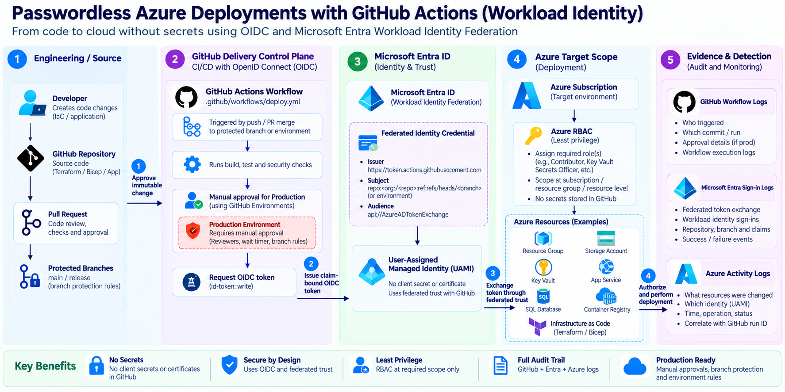

Reference architecture: repository trust, workload identity federation, scoped Azure authorization, and operational evidence.

Diagram source: curated architecture board for this article.
Production Scenario
Representative scenario: This is a realistic composite design for cloud architects. It does not claim to represent the author's employer, client, production tenant, or measured business results.
Application teams deploy Terraform infrastructure and application releases into separate Azure development subscriptions. Existing pipelines rely on long-lived client secrets shared across repositories, creating a high-risk attack surface. The platform team mandates a migration to GitHub OpenID Connect (OIDC) workload identity federation. The objective is to scope federated identities and Azure Role-Based Access Control (RBAC) by environment, require protected-environment approval for production, and retain evidence tying a workflow run to an Azure deployment.
Constraints and Starting State
The current state involves static credentials stored as repository secrets. These secrets are rotated infrequently and accessible to any contributor with read access. The platform team requires passwordless authentication for all new deployments. The identity team mandates trust relationships via Microsoft Entra Workload ID federation. Security operations require every deployment to be traceable to a specific GitHub Actions run and user.
The architecture supports four environments: Development, Test, Staging, and Production, each in a separate Azure subscription. The platform team controls the Microsoft Entra tenant and Azure subscriptions. Application teams own source code and GitHub repositories. The design must enforce least-privilege access, ensuring a workflow running in Development cannot access Production resources.
Architecture and Decisions
The core architectural decision replaces client secrets with OIDC tokens issued by GitHub Actions and validated by Microsoft Entra ID. This eliminates long-lived credentials in GitHub. A trust relationship is established between a Microsoft Entra application and the GitHub repository.
Decision 1: Identity Type. The platform team selected Microsoft Entra applications (service principals) over user-assigned managed identities. This allows finer-grained control over federated identity credentials using Microsoft Graph or the Azure portal. User-assigned managed identities were rejected because they require Azure resources to be provisioned before the identity can be used, creating a chicken-and-egg problem for initial infrastructure deployment.
Decision 2: Scope of RBAC. Azure RBAC roles are assigned at the subscription scope for each environment. This allows the platform team to manage access centrally while keeping environments isolated. The Contributor role was rejected in favor of custom roles or narrower built-in roles like Virtual Machine Contributor or Storage Account Contributor, depending on the workload. This aligns with best practices for limiting privileged administrator role assignments.
Decision 3: Environment Protection. GitHub Environments enforce approval gates for Production deployments. This ensures no automated workflow can deploy to Production without manual review. The platform team configured required reviewers for the Production environment in GitHub. This adds a human-in-the-loop control critical for high-risk changes.
Implementation Walkthrough
Implementation begins with creating a Microsoft Entra application for each environment. The application is registered in the Microsoft Entra tenant. Next, a federated identity credential is configured on the application to trust tokens issued by GitHub Actions for the specific repository and branch. The issuer URL for GitHub is https://token.actions.githubusercontent.com. The subject claim is set to repo:organization/repository:ref:refs/heads/main for the main branch.
For the GitHub Actions workflow, the azure/login@v2 action authenticates with Azure using OIDC. The workflow requires the id-token: write permission to fetch the OIDC token. The client ID, tenant ID, and subscription ID are stored as GitHub secrets. These secrets are identifiers, not credentials, allowing the workflow to request a token from Microsoft Entra ID.
name: Deploy to Azure
on:
push:
branches: [ main ]
permissions:
id-token: write
contents: read
jobs:
deploy:
runs-on: ubuntu-latest
environment: production
steps:
- name: Azure Login
uses: azure/login@v2
with:
client-id: ${{ secrets.AZURE_CLIENT_ID }}
tenant-id: ${{ secrets.AZURE_TENANT_ID }}
subscription-id: ${{ secrets.AZURE_SUBSCRIPTION_ID }}
- name: Deploy Terraform
run: |
terraform init
terraform apply -auto-approve
Pipeline and Policy Controls
Pipeline controls are enforced through GitHub Environments and Azure RBAC. For the Development environment, the workflow runs automatically on push to the main branch. For Production, the workflow is blocked until a required reviewer approves the deployment. This approval is recorded in the GitHub audit log.
Azure RBAC policies restrict the scope of the service principal. The service principal for the Production environment is assigned the Contributor role only to the Production subscription. It has no access to other subscriptions. This ensures that even if the service principal is compromised, the blast radius is limited to the Production environment.
| Environment | GitHub Environment | Approval Required | Azure RBAC Role | Scope |
|---|---|---|---|---|
| Development | dev | No | Contributor | Dev Subscription |
| Test | test | No | Contributor | Test Subscription |
| Staging | staging | Yes | Contributor | Staging Subscription |
| Production | production | Yes | Contributor | Prod Subscription |
Failure Test and Recovery
To validate the architecture, a failure-injection test is designed. The test involves attempting to deploy to the Production environment from a branch other than main. The expected outcome is that the OIDC token exchange fails because the federated identity credential is scoped to refs/heads/main. The observable evidence is an authentication error in the GitHub Actions log. The stop condition is the failure of the azure/login step. The recovery action is to merge the changes to main and trigger a new deployment. This test confirms that the trust boundary is correctly enforced.
Operational Evidence
Operational evidence is critical for auditing and compliance. The GitHub Actions log provides evidence of the workflow run, including the user who triggered it and the approval status. The Microsoft Entra ID sign-in logs provide evidence of the token exchange, including the client ID and the scope of the access token. The Azure Activity Log provides evidence of the resource changes made by the service principal. By correlating these logs using the workflow run ID and the service principal ID, the security operations team can trace every deployment back to a specific user and code change.
Reusable Blueprint
This architecture can be reused across multiple repositories and environments. The key components are the Microsoft Entra application, the federated identity credential, the GitHub Environment, and the Azure RBAC assignment. The platform team can automate the creation of these components using Terraform or Bicep. The application team can then configure their GitHub Actions workflows to use the OIDC authentication. This blueprint provides a secure, scalable, and auditable way to deploy Azure resources from GitHub Actions.
The migration away from client secrets reduces the operational burden of credential rotation and eliminates the risk of secret leakage. The use of OIDC workload identity federation ensures that access is granted only to the specific workflow and branch, enforcing least-privilege access. The combination of GitHub Environments and Azure RBAC provides a robust control plane for managing deployments across multiple environments.
Sources